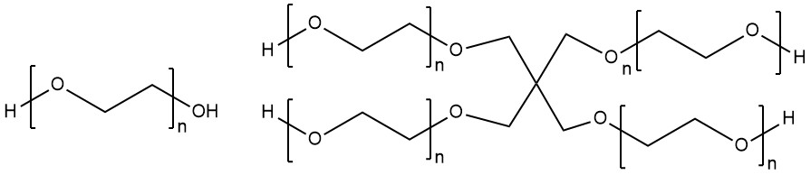
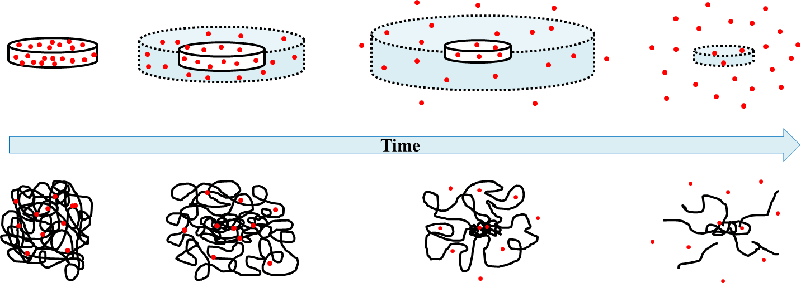
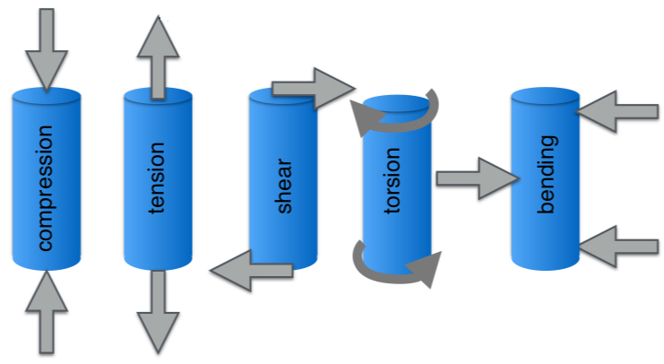
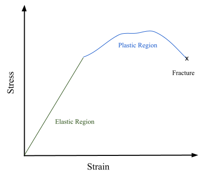
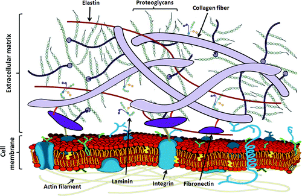

3 Introduction to Polymers, Biomaterials, and other Anseth Group concepts
Carrie T. Bishop
2021-05-15
3.1 Introduction
This is primarily designed as a resource for graduate students to have introductory information for working with undergraduates in the Anseth Group. There are some sections (such as Undergraduate Funding and Basic Principles) that undergraduates may benefit from reading directly to get a basis to understand some of the work in the lab - feel free to share this guide. Please contact ?? with any corrections, additions, or suggestions.
3.2 Necessary Trainings
Several trainings are required for students to be in lab. These can be completed online through CU Environmental Health & Safety (EH&S). Each module will be followed by a short quiz to certify the student in the course and must be completed within 6 months of starting lab work. Depending on the type of work, other trainings may be required, and can be found at EH&S Trainings.
- General Biosafety Training
- Lab Safety and Hazardous Waste Generator Training
Students will also need to be trained for the equipment they will be using. In general, this will consist of the graduate student/post-doc currently in charge of the equipment to train and acknowledge the student can work independently or with supervision on that equipment. The following tools must always be used with graduate student supervision:
- Nice microscopes
- Plasma thingymabob
- Protein
- HPLC
Additionally, there are multiple resources for sterile cell culture guidelines, media, and ..? that can be found here:
3.3 Opportunities for Undergraduate Funding
Students may choose to use their participation in the Anseth lab for class-credit, or apply for grants/hourly pay through numerous campus organizations. Some non-CU affiliated grants exist as well, but will not be discussed here.
If a student chooses to apply their research for class-credit, they should contact their advisor for current information and limits to this. In the CHBE/CHEN program, they can contact Deb Renshaw (deb.renshaw@colorado.edu) or their current academic advisor. Students can register for Independent Study projects (CHEN 2840, 3840, or 4840) and commit to a minimum of 9 hours of research work per week for 3 credits, and additionally will require a cumulative report/paper and recommended presentation. These projects will need Dr. Anseth’s approval/support to proceed. Senior Thesis is another un-paid option to obtain class credit, and require students to have above a 3.50 GPA (technical elective credit) or above a 3.70 major GPA (replace CHEN 4130 or 4810). These projects should be submitted to the student’s academic advisor the spring preceding the student’s senior year. Again, Dr. Anseth is a big part of this process. These opportunities are described more in-depth here (CU Undergraduate Opportunities).
If a student does not want to volunteer or use their research for credit, they can apply for paid programs or grants. Some programs will assign students to mentors/labs based on interests, with preference given to requested students in most cases - however, this is not guaranteed. Students with a mentor/project who wish to apply for funding can look into the Biological Sciences Initiative (BSI), Undergraduate Research Opportunities Program (UROP), or contact their academic advisor for new programs. These projects generally are awarded for either the academic year or summer, and applications will be due in March (for summer opportunities) and August (for academic year), but are a few months before proposed work begins.
If the student is open to other funding opportunities or labs, the Discovery Learning Apprenticeship (DLA, due mid-April), NIST-PREP, CU Summer Program for Undergraduate Research (CU-SPUR), Your Own Undergraduate Research (YOU’RE@CU, applications due in December for spring work), STEM Routes, and Ronald E. McNair Scholars Program all offer other student funding opportunities. Not all of these programs guarantee the student will be placed within the Anseth Lab with a requested mentor.
3.4 Basic Principles Applicable to the Anseth Research Group
3.4.1 Dilution, Buffer Solutions, and Pipetting
Dilution, buffer solutions, and pipetting are ubiquitous techniques used in day-to-day work. These will mostly be covered in Chemistry I-II and the associated lab course.
Diluting a solution adds a liquid (usually a buffer solution) to another, more concentrated solution. This will decrease the concentration of species in the original solution, and allows for dyes and other additives to be stored in a more concentrated form (using less space). The primary equation to calculate either the final concentration of the species, or the final volume needed, is as follows:
\[(Initial Concentration)*(Initial Volume)=(Final Concentration)*(Final Volume)\] \[M_1 * V_1 = M_2 * V_2\] Buffer solutions are solutions that have both a weak acid and its conjugate base so that the pH does not change significantly when acids or bases are added [1]. Commonly, phosphate-buffered saline (PBS) is used as a buffer solution. When diluting species that have a narrow pH range (such as proteins that will denature outside of normal conditions), buffer solutions are very useful. Equations such as the Henderson-Hasselbalch equation can be used to calculate the pKa or pH of buffer solutions based on the goals of the dilution.
Proper pipetting should be reviewed, but in general, it is important to be aware of the two stops when releasing liquid. Pipettes are calibrated for a certain range (specified on the pipette), and should only be used within that range. A reasonable margin of error if used correctly will be ~ 10 percent of the smallest graduation on the pipette [2]. To draw the volume needed, press the pipette push button to the first stop, insert it below the liquid surface, slowly release the push button until it stops. Remove slowly from liquid. To release the liquid, press to the second stop.
3.4.2 Biomaterials
Biomaterials are a complex field that encompasses primarily metals, ceramics, and polymer science. Materials are used to cause or replace a biological function (for instance, dental fillings or a pacemaker), and can be inert or bioactive. In the following sections only polymers will be discussed, but it is important to note that they are not the only biomaterial out there. Most of the following information will be covered in Biomaterials (CHEN 4805) but numerous resources are available online for more in-depth information.
Polymers consist of repeating molecule units (“mers”) that are bonded to form a larger strand or network - “poly-mer”. Some everyday examples of polymers could be PVC pipes (polyvinyl chloride), nylon (polyamides), etc. Additionally, polymers can be naturally derived (such as collagen) or synthetically made in a lab. When the repeating units bond together, atomic properties of the groups dictate how the polymer chains form - linear, where polymers are joined end-to-end, or branched, where polymers can diverge into two strands joined. This arrangement also gives many mechanical properties to polymers, and determines how they will behave in a variety of situations. If a polymer can form multiple bonds, the number of bonds is described by the functionality of the molecule. Both linear and branched polymers can be crosslinked to form polymer networks. These 3D polymers are joined at intervals through covalent bonds (chemical crosslinking) or physical crosslinking (via physical interactions, such as hydrogen bonding or ionic interactions). These networks can also be made of two different polymers that covalently bond, called copolymers.
When multiple polymer chains crosslink, bonds form between various positions on polymer chains via non-reversible reactions or during synthesis. If polymer chains become highly crosslinked (≥3 bonds per polymer chain), then they can form a polymer network [3]. Some material properties may change for the network as a whole; these 3D structures are what can be used for drug delivery, cell growth and organoid development, and a variety of other applications investigated in the Anseth group.
There are a few common ways to describe polymers: primarily, this will be the molecular weight of the polymer, and polydispersity index. For a single polymer chain, the molecular weight of the chain will be the molecular weight of the repeating unit multiplied by the number of units in the chain (for example, a PEG monomer has a monomer MW of ~44 g/mol). This is generally not super practical for a sample of polymers that may contain a large number of chains and varying molecular weights per chain. Instead, the number average molecular weight (Mn) and the weight average molecular weight (Mw) are used. Mn is the average of the polymer chains in the sample and is based on the total number of chains in the sample. On the other hand, Mw accounts for longer chains having a much larger molecular weight. Depending on the distribution in sizes of these chains, Mw and Mn will likely be different. The polydispersity index (PDI) can be used to evaluate the differences in these two quantifications, where PDI = Mw/Mn. Again, these are used to look at samples from a polymer synthesis reaction, where there may not be uniform chain sizes.
There are three main ways that polymers are made:
- Radical chain growth: molecules are added through a series of radical reactions, requires an initiator species (acts as the radical initiator, similar to a catalyst), chains of different sizes can react to form larger polymer chains. As a review of radical mechanisms:
\[I_2 → 2 I⠂\]
\[I⠂+ M → M⠂+ I \]
\[M_n + M⠂→ M_{n+1}\]
\[ \text{I = initiator, ⠂= radical/free electron, M = monomer (subscript denotes number of monomers linked in a chain)}\]
- Anionic chain growth: a base catalyzes a generally nucleophilic attack on a species to add to the end of the chain
- Step Growth (condensation): elimination of water from polymers bonds existing chains together
Poly(ethylene glycol) (PEG) is a common starting monomer used in the Anseth Group, and can come in a variety of conformations, molecular weights, and functionalities. A few of these are shown below. PEG can be purchased and generally comes separated by the size of the polymer chains. From the PEG polymer chains, functional groups can be added to create the hydrogel building blocks.

Basic PEG monomer (if n=1) and 4-arm PEG polymer (n=4) (made with ChemDraw).
Once a polymer is synthesized, a variety of techniques can be used to determine what kind of polymers are actually in the sample and characterize the sample. Chromatography is used to physically separate components based on physical properties, while spectroscopy identifies components based on how a material absorbs energy. Ultraviolet and Visible Light Spectroscopy (UV-VIS) is a common technique used to measure the absorption of a spectrum of light emitted by a source through a material. This can be used to quantify the amount of a component with a known spectra in a sample, or a pure sample can be recorded for future use. Infrared spectroscopy (IR) uses infrared light to measure how bonds in a molecule oscillate and stretch, and spectra produced can be used to identify specific bonds in a sample based on known measurements for certain bonds or groups. This gives structure and composition information. Nuclear Magnetic Resonance spectroscopy (NMR) uses radio frequency waves to measure the spin generated by atomic nuclei (commonly hydrogen or carbon based). Like IR, NMR can be used to determine the arrangement and structure of a molecule through the peaks produced in this analysis. Mass Spectrometry can be used to find the atomic or molecular mass of a component. High-energy particles are used to ionize the sample of interest, then a magnetic field separates these based on the interactions with the magnetic field. Finally, High-Performance Liquid Chromatography (HPLC) is a method used to separate a sample by size or charge and binds or allows certain particles to adsorb or pass through. This can be highly tailored to the sample, and can give information such as molecular weight or other physical properties.
Hydrogels are a specific subset of polymers that are characterized by the ability to absorb large amounts of water. An example would be contact lenses: when hydrated, they are soft, flexible, and hold their shape to a reasonable amount of applied force. Hydrogels can can be made from synthetic or natural materials, but generally are very hydrophilic (allowing them to absorb water) [4]. Depending on the composition of the hydrogel, they may be stable over longer periods of time or may degrade and fall apart over shorter time scales. In general, these networks are physically stable through the chemical bonds linking the polymer, but can also be held by physical entanglements or secondary forces (such as intermolecular forces between molecules along the chain). Covalently crosslinked hydrogels are known as “permanent” or “chemical” networks, and when swollen in water, reach an equilibrium swelling state where the osmotic swelling pressure is 0. An important factor that determines how much water can swell into a network is the crosslink density. Conceptually, this if a unit volume of a polymer was extracted, and all of the crosslinks and bonds between polymers were counted, this would describe the density. Realistically, it can be estimated using the molecular weight between crosslinks (M_c)[5]. In general, as the crosslink density increases, the swelling ratio will decrease. This can conceptually be thought of as a series of springs, where each spring represents a polymer. To extend a single spring beyond its resting length, some force must be applied to stretch it out (this would represent water stretching a polymer, which is not physically important in most cases). If there were three springs, each spring would need that same force applied to it, so a total of 3x force would be needed to stretch out each spring instead of only one spring. If there were 10 springs, 10x total force would be needed to stretch all the springs. This can loosely be applied to crosslink density: if there is a lower crosslink density, water can stretch out polymers much more. If there is a higher crosslink density, then the osmotic force of the water is distributed over more bonds, so the polymer swells less.
The following is an equation that can be used to calculate Mc: \[M_C^{-1} =\frac{2}{M_n} - \frac{(v/V_i)*(ln(1-v_{2,s}))+v_{2,s}+X_{1,2}*v^2_{2,s})}{v^{0.5}_{2,s}-0.5*v_{2,s}}\] Where:
- \(M_n\) is the number average molecular weight of the polymer chains
- \(v\) is the specific volume of the polymer in units of volume per mass
- \(V_i\) is the molar volume of the solvent (usually water) in units of volume per mole
- \(v_{2,s}\) is the inverse of the swelling ratio (where v2,s=1/Q)
- \(X_{1,2}\) is the interaction parameter between the solvent and the polymer
The swelling ratio (Q) is another common description of the polymer and describes the amount of water a polymer can absorb relative to the polymer.
\[Q = \frac{Volume_{swollen polymer}}{Volume_{dry polymer}}=\frac{Mass_{swollen polymer}}{Mass_{dry polymer}}\] When the material swells, water creates space between the polymer chains. This water can be bound or free to move throughout the polymer, and affects how other substances can be bound into the network or diffuse through the polymer. If the network is thought of as a mesh (like a 3D fishing net), the mesh size can be calculated to quantify the space between crosslinks. This mesh size then determines the diffusivity of particles through the hydrogel: if the solute diameter is larger than the mesh size, the solute will not be able to diffuse out of the network until the material degrades. However, if it is smaller than the mesh size, then it may be able to diffuse out of the network and into the solvent.
\[ \xi = v^{-1/3}_{2,s}*<r^2>^{1/2}=v^{-1/3}_{2,s}*l*n^{1/2}*C^{1/2}_n\] Where:
- \(\xi\) is the mesh size
- \(v_{2,s}\) is the inverse swelling ratio
- \(<r>\) is the random walk model for end-to-end polymer length (the random walk model stipulates that if every bond on a polymer chain was randomly rotated, the end-to-end distance of a polymer would be a certain distance – this is not very accurate, so the following simplification is used) \(<r^2>^{1/2}=l*n^{1/2}*C^{1/2}_n\)
Where:
- \(l\) is the effective bond length (for instance, a C-O bond is 1.42 Angstroms), averaged for the monomer
- \(n\) is the number of bonds in a polymer chain (\(n = M_C/MW_{monomer}*\text {(number bonds per monomer)}\))
- \(C_n\) is the characteristic ratio for a given polymer
These values change the diffusivity of the network, and there are many models out there to describe the diffusivity through different polymers. The image below models how particles trapped in a hydrogel may diffuse out of the network.

Figure 2 from Caccavo et al., 2016[6]. Red dots describe particles entrapped in the network initially, and diffuse out of the network over time. Below the time bar, a representation of how the polymer might look as it swells and crosslinks stretch (leading to degradation).
The stiffness of the hydrogel is also affected by the crosslink density and physical parameters. This characterization is widely used to model specific tissues when hydrogels are used as a cell culture medium. This is the most common application of hydrogels in the Anseth Group. A brief distinction: if cells are encapsulated in a hydrogel, the gel is made around the cells, and cells are in the pore or mesh (3D). If cells are seeded onto a gel, they are only on the surface (2D).
3.4.3 Material Chemistry & Properties
Polymer science is a part of a wider field: materials science and chemistry. Although this forms the basis of hydrogels and how they can be engineered to answer research questions or solve therapeutic challenges, the following information will only cover a few basics that relate to hydrogels and their characterization.
The mechanical properties of hydrogels and other biomaterials depend on the structure/composition of a material and how it is made. To understand the mechanical properties, elasticity, viscoelasticity, and how the material behaves over time are crucial to understanding behavior. When talking about materials, a few key terms are used: stress describes the applied force per area ( \(\sigma\) = Force / (cross-sectional area), and strain describes how the material deforms under stress (\(\varepsilon\) = (change in length) / (original length)). A material can be loaded with force in multiple directions to model different types of stress and encourage different types of strain.

Fundamental types of loading, where the blue is the original material, and the grey arrows represent the directions force is applied[7].
If a material is elastic, then it will return to its original shape after the stress is removed (like a rubber band or spring). If a material is elastic, it can be described by a linear relationship between stress and strain and described by Hooke’s Law or Young’s Modulus, where \(E=\sigma / \varepsilon\). Conversely, if a material exhibits plastic deformation, the relationship between stress and strain is non-linear and the material does not return to its original shape after the stress is removed. Young’s Modulus and Hooke’s Law cannot be used to describe this behavior. An example of plastic deformation would be chewing gum: when it is stretched, it generally holds the stretched shape after the force pulling it is removed and does not spring back.

When a load or stress is repeatedly applied to a material, it undergoes fatigue, and may eventually fracture or break. This can be modeled using cyclic loading, where a force is applied and the number of cycles to reach fracture is measured.
Over time, materials can exhibit a time-dependent change in the stress-strain relationship. When the stress-strain relationship is dependent on time, a material is referred to as viscoelastic (contains both a viscous and elastic component). The elastic behavior is modelled by Hooke’s Law still, but the viscous component of behavior is modeled by a dashpot that follows Newton’s Laws (\(\sigma = \eta * \frac{d\varepsilon}{dt}\)), where \(\eta\) is the viscosity of a material). This kind of behavior can be seen in silly putty or guitar strings, where the stress-strain behavior changes over time. To describe this behavior, stress relaxation and creep are used. When a material undergoes stress relaxation, a constant strain is applied, but the stress decreases over time: this is the behavior a string instrument undergoes when it is strummed. In other words, the material relaxes when it is held at a constant strain (length in many cases), so less force is needed to hold it at a certain length. Maxwell’s spring and dashpot in series model this behavior well. Creep describes how the strain changes when a constant stress is applied. In other words, how the changes in the material shape can change with a constant applied force. Voigt’s spring and dashpot in parallel can describe this behavior to an extent.
To characterize the behavior of a hydrogel, multiple techniques can be used. As previously mentioned, NMR and Mass Spectrometry can be used to analyze the molecular components of a gel. UV-VIS and other techniques can be used to measure diffusion of particles in and out of a matrix. Swollen and dry samples of gels can be measured to find the swelling ratio. Hydrogels can also be characterized using a few different lab techniques. Rheology is a strong tool for information of swollen and non swollen gel samples that gives information about how the gel forms and the elastic modulus of the gel (Young’s Modulus). Shear rheology is most common in the Anseth Group. In this method, a force is applied to a gel through a cylindrical bar that is very sensitive – as it rotates at a certain rate, the changes to the gel are recorded, and give the elastic modulus and loss modulus. Fourier transform infrared spectroscopy (FTIR) can also be used to analyze gels, and changes in molecular composition at an instant or instants over time.
Many of the material chemistry specifics are easier to understand after Organic Chemistry 1 & 2, but there are a few general categories of polymer chemistries used in the lab that are worth having a working idea of. Hoffman also provides a good summary of some chemistry basics for hydrogels used in biomedical applications[8]. In general, most of the reactions used are click reactions defined as being simple, high-yielding, and having limited byproducts that can be removed easily. Photoinitiated reactions also are commonly used to form gels. Photopolymerization occurs through irradiation (generally in combination with an initiator molecule, such as LAP) to generate radical species that then form chemical bonds that crosslink the network via covalent bonds formed between functional groups[9]. Many reactions are photoclick chemistry, where light is used to initiate click reactions[10]. This category includes the thiol-ene click reactions, strain-promoted alkyne-azide cycloaddition (SPAAC) reactions, and thiol-Michael reactions. Some reactions (usually copolymer reactions) occur spontaneously or on short time scales when they are mixed.
3.4.4 Extracellular Matrix and Cell Receptors
In live organisms, cells do not exist in isolation or solely rely on cell-cell junctions. Instead, they are surrounded by the extracellular matrix (ECM), which is a fiber reinforced network composed of water, proteins, and polysaccharides such as collagen and elastin. This network provides support, acts as a cell scaffold, and also facilitates many biochemical and biophysical cues that allow cells to interact with each other and the larger system[11]. The ECM varies based on the tissue type it is located in, as cells continuously degrade and deposit new matrix. Other than water, two main macromolecular classes make up the ECM: fibrous proteins (collagen, elastin, fibronectin, and laminin) and proteoglycans. Different combinations of these proteins are generally referred to as natural hydrogel materials.

The ECM is composed on elastin, proteoglycans, collagen, and other fibers that attach to the cell via membrane proteins and receptors[12].
The ECM is crucial to cell-cell interactions and can affect cellular behaviors such as cell spreading, adhesion, migration, morphology, communication, and differentiation. Integrin receptors attach the ECM fibers on the outside of the cell to the cell interior so that matrix cues can be “sent” to the inside of the cell and trigger pathways that change cell behavior. When integrin receptors become primed and cluster with other activated (attached to ECM fibers), it forms a focal adhesion. Mature focal adhesions are very dynamic, and last for approximately 20 minutes. Inside the cell, the cytoskeleton is made of actin and myosin proteins that extend from the cell nucleus to the membrane and provide the interior structure to the cell. Focal adhesions connect to ECM fibers to the cytoskeleton, and enable cells to move[13]. Khan Academy has a great video to visualize and explain this.
There are other ways cells can communicate and many different membrane receptors, but integrin receptors and the ECM will likely be the most applicable to start.
3.4.5 Common Cell Types
Most of the cell types investigated in the Anseth Group will be eukaryotic, mammalian cells. The cell type will depend on the research question and proposed applications of the material. In general, cells are stored at -80℃ or liquid nitrogen (-200℃) for long term storage in aliquots of a certain volume/estimated cell count. Cells can be thawed and cultured using the appropriate protocol. Additionally, cells should only be cultured until their recommended passage number is reached. One cell passage is the process of seeding cells onto a new substrate, growing the cells to a desired confluence, then removing the cells (generally with trypsin), washing, centrifuging, and reseeding a certain percentage of the cells onto a new substrate (such as a plate).
- Intestinal Stem Cells (ISCs): generally used for the organoid projects (generally murine)
- NIH-3T3 Fibroblasts: established cell line of murine fibroblasts, good general usage
- Mesenchymal Stem Cells (MSCs, aka Stromal Stem Cells): generally human-derived multipotent stem cells from adult bone marrow cells that can differentiate into bone, cartilage, muscular, neural, or skin cells
- Valve Interstitial Cells (VICs): cells found throughout the heart valve with a wide variety of purposes and disease responses (usually used as a disease model for cardiac fibrosis)
3.4.6 Common Assays
There are a few common cell assays that are frequently used for cell studies/characterization. Although the protocol may slightly vary, the general idea is pretty similar. Cells are stained in situ generally with a multi-step protocol where the stain is added, washed, and cells are fixed, though this may change depending on the goals of the stain. Cells are then imaged using fluorescence microscopy, with the wavelength of light used corresponding to the fluorescent dye that is a part of the stain. These images are quantified for analysis.
- Cell Viability (live/dead assay): cells are stained with a mix of two dyes, one that is impermeable to intact cell membranes (only staining dead cells), and one that is membrane permeable and fluoresces when taken up into the cellular cytoplasm. This mix of dyes will quantify the number of live cells versus dead cells in the sample.
- Nuclear Stain (DAPI): this usually blue dye will only be taken up into the cells, and concentrates in the nucleus. It shows where true nuclei are, and can help to differentiate individual cells and other stain groups.
- Cell Proliferation (EdU stain): DNA synthesis is measured by adding EdU to cells, where it is taken up by newly divided daughter cells. A fluorescent molecule is then added that can react with EdU and will tag the cells that have recently divided, indicating cell replication.
- Cell Spreading, Motility, & Migration: cell spreading is the cytoplasmic area change in cells, cell motility represents the normal, random movement of cells, and cell migration is directional movement caused by secretory or mechanical cues. Cell stains may depend on the precision that is desired, but F-actin stains, cytoplasm stains, cytoskeletal stains, or other membrane stains may be used. Many times these cells are stained and not fixed to track live movement in a time period.
3.4.7 Statistics & Statistical Tests
These concepts should be covered in most statistics courses, but few basic concepts and tests will be summarized here. Statistics are used to analyze data and prove the significance of data towards supporting a hypothesis. Experiments should be designed to eliminate the number of variables aside from the independent variable that is being investigated. The variables can be quantitative or qualitative, with the levels of the variable meaning the possible values it can be.
The given research question must be testable through controlling most variables, and investigating the independent variable. Two hypotheses can come out of this research: the null hypothesis, which predicts that the data will not support the hypothesis, and the alternate hypothesis where the data does support the hypothesis. Random samples with multiple replicates per experimental condition are then used to test the hypothesis. This is aimed to reduce any natural or experimental variation. Having replicates (generally greater than or equal to 3 replicates per condition) also helps to support if a result is truly occurring due to the independent variable, or if it comes from natural variation. When replicates are used, samples across a condition can be paired or unpaired: if samples are paired, then they are naturally matched in some way, and used for each condition. For example, in the VICs projects, when cells are isolated from heart samples, the treated condition may contain samples from pigs A, B, and C, and the untreated condition also has samples from pigs A, B, and C. The untreated sample A and treated sample A are paired, so the analysis takes that into account as part of differentiating between normal, biological variation.
Once the data is collected, different statistical methods can be used to analyze the data to prove a certain hypothesis. This will often depend on the type of data and what is being investigated, and often determines the platform that should be used. An important value is the p-value: in short, this is the probability that the null hypothesis is accepted. In other words, if the p-value is equal to 1, then the observed difference is most likely not due to the independent variable and the observed variable could have occurred due to random chance. However, if the p-value is close to 0, then the alternate hypothesis is likely the cause for a difference in samples. Therefore, a lower p-value supports the proposed hypothesis more strongly. Generally, a p-value of 0.05 is used as the cutoff for statistically significant differences. On figures, the significance is generally stated, and can be represented by * values corresponding to different p-values. Analysis of Variance (ANOVA) is another common method to determine the significance of a variable, or multiple variables. For further explanation, Burnham 2015 is recommended for more basic statistics to further explain these tools[14].
References
- Introduction to Buffers. (2020, August 15). Retrieved May 19, 2021, from https://chem.libretexts.org/@go/page/78249.
- Omega Garces, F. (2017). Apparatus and Lab Techniques in Analytical Chemistry. Chemistry 251. http://faculty.sdmiramar.edu/fgarces/zCourse/All_Year/Ch251/a_LecLab/02_Lecture/01_LecNotes/03_ExperimentalErrors/301_ExptErrors.pdf.
- Callister, W. D., & Rethwisch, D. G. (2011). Chapter 14: Polymer Structures. In Materials Science and Engineering (8th ed., pp. 532–564). essay, Wiley.
- Ahmed, E. M. (2015). Hydrogel: Preparation, characterization, and applications: A review. Journal of Advanced Research, 6(2), 105–121. https://doi.org/10.1016/j.jare.2013.07.006.
- Omidian, Hussein & Hasherni, Seyed-Ali & Askari, Fahimeh & Nafisi, Siavash. (1994). Swelling and Crosslink Density Measurements for Hydrogels. Iranian journal of polymer science & technology. 6. Diego Caccavo, Sara Cascone, Gaetano Lamberti, Anna Angela, Barba and Anette Larsson. (2016). Swellable Hydrogel-based Systems for Controlled Drug Delivery. Smart Drug Delivery System, Ali Demir Sezer, IntechOpen, https://doi.org/10.5772/61792.
- Collins, D. (2019). There are five fundamental types of loading: compression, tension, shear, torsion, and bending. Linear Motion Tips. WTWH Media LLC. https://www.linearmotiontips.com/mechanical-properties-of-materials-stress-and-strain/.
- Hoffman, A. S. (2012). Hydrogels for biomedical applications. Advanced Drug Delivery Reviews, 64, 18–23. https://doi.org/10.1016/j.addr.2012.09.010.
- Kunal Pal, Vinay K. Singh, Arfat Anis, Goutam Thakur & Mrinal K. Bhattacharya (2013). Hydrogel-Based Controlled Release Formulations: Designing Considerations, Characterization Techniques and Applications, Polymer-Plastics Technology and Engineering, 52:14, 1391-1422.: https://doi.org/10.1080/03602559.2013.823996.
- Fairbanks, B. D., Macdougall, L. J., Mavila, S., Sinha, J., Kirkpatrick, B. E., Anseth, K. S., & Bowman, C. N. (2021). Photoclick Chemistry: A Bright Idea. Chemical Reviews. https://doi.org/10.1021/acs.chemrev.0c01212.
- Christian Frantz, Kathleen M. Stewart, Valerie M. Weaver. (2010). The extracellular matrix at a glance. J Cell Sci; 123 (24): 4195–4200. https://doi.org/10.1242/jcs.023820.
- Xue, Meilang & Jackson, Christopher. (2013). Extracellular Matrix Reorganization During Wound Healing and Its Impact on Abnormal Scarring. Advances in Wound Care. 4. 131106055742000. https://doi.org/10.1089/wound.2013.0485.
- Seliktar D. (2012). Designing cell-compatible hydrogels for biomedical applications. Science (New York, N.Y.), 336(6085), 1124–1128. https://doi.org/10.1126/science.1214804.
- Burnham, B. R. (2015). Fundamental Statistics for the Behavioral Sciences. Fundamental Statistics. https://sites.google.com/site/fundamentalstatistics/home.